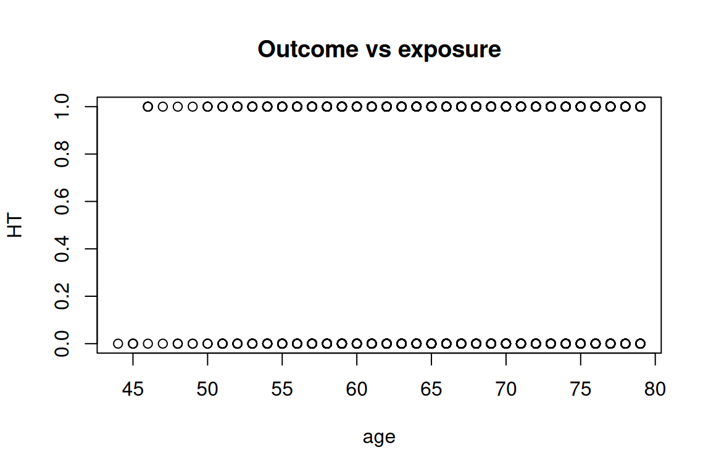
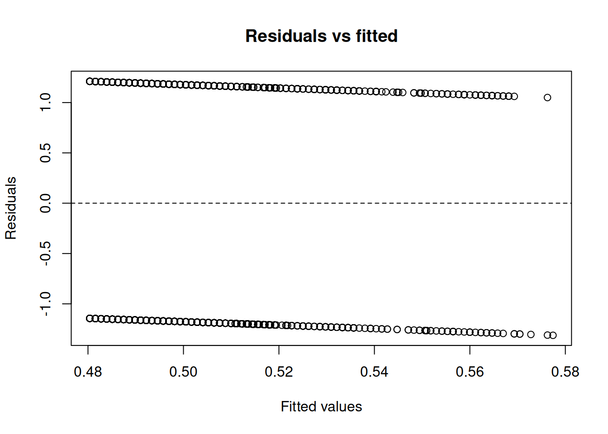

Code
data(rmb_datasets, package = "rmb")
rmb_datasets$study_design[rmb_datasets$object == "hers"]
#> [1] "Randomized placebo-controlled trial in postmenopausal women with CHD evaluating hormone therapy."This vignette implements an expanded, dataset-organized RMB2e analysis workflow for hers.
data(rmb_datasets, package = "rmb")
rmb_datasets$study_design[rmb_datasets$object == "hers"]
#> [1] "Randomized placebo-controlled trial in postmenopausal women with CHD evaluating hormone therapy."data(hers, package = "rmb")
dat <- hers
dim(dat)
#> [1] 2763 37
head(dat)
#> HT age raceth nonwhite smoking drinkany exercise physact globrat poorfair
#> 1 0 70 2 1 0 0 0 5 3 0
#> 2 0 62 2 1 0 0 0 1 3 0
#> 3 1 69 1 0 0 0 0 3 3 0
#> 4 0 64 1 0 1 1 0 1 3 0
#> 5 0 65 1 0 0 0 0 2 3 0
#> 6 1 68 2 1 0 1 0 3 3 0
#> medcond htnmeds statins diabetes dmpills insulin weight BMI waist WHR
#> 1 0 1 1 0 0 0 73.8 23.69 96.0 0.932
#> 2 1 1 0 0 0 0 70.9 28.62 93.0 0.964
#> 3 0 1 0 1 0 0 102.0 42.51 110.2 0.782
#> 4 1 1 0 0 0 0 64.4 24.39 87.0 0.877
#> 5 0 0 0 0 0 0 57.9 21.90 77.0 0.794
#> 6 0 0 0 0 0 0 60.9 29.05 96.0 1.000
#> glucose weight1 BMI1 waist1 WHR1 glucose1 tchol LDL HDL TG tchol1 LDL1
#> 1 84 73.6 23.63 93.0 0.912 94 189 122.4 52 73 201 137.6
#> 2 111 73.4 28.89 95.0 0.964 78 307 241.6 44 107 216 150.6
#> 3 114 96.1 40.73 103.0 0.774 98 254 166.2 57 154 254 156.0
#> 4 94 58.6 22.52 77.0 0.802 93 204 116.2 56 159 207 122.6
#> 5 101 58.9 22.28 76.5 0.757 92 214 150.6 42 107 235 172.2
#> 6 116 57.7 27.52 86.0 0.910 115 212 137.8 52 111 202 126.6
#> HDL1 TG1 SBP DBP age10
#> 1 48 77 138 78 7.0
#> 2 48 87 118 70 6.2
#> 3 66 160 134 78 6.9
#> 4 57 137 152 72 6.4
#> 5 35 139 175 95 6.5
#> 6 53 112 174 98 6.8
summary(dat)
#> HT age raceth nonwhite
#> Min. :0.0000 Min. :44.00 Min. :1.000 Min. :0.0000
#> 1st Qu.:0.0000 1st Qu.:62.00 1st Qu.:1.000 1st Qu.:0.0000
#> Median :0.0000 Median :67.00 Median :1.000 Median :0.0000
#> Mean :0.4995 Mean :66.65 Mean :1.147 Mean :0.1129
#> 3rd Qu.:1.0000 3rd Qu.:72.00 3rd Qu.:1.000 3rd Qu.:0.0000
#> Max. :1.0000 Max. :79.00 Max. :3.000 Max. :1.0000
#>
#> smoking drinkany exercise physact
#> Min. :0.0000 Min. :0.0000 Min. :0.0000 Min. :1.0
#> 1st Qu.:0.0000 1st Qu.:0.0000 1st Qu.:0.0000 1st Qu.:2.0
#> Median :0.0000 Median :0.0000 Median :0.0000 Median :3.0
#> Mean :0.1303 Mean :0.3915 Mean :0.3865 Mean :3.2
#> 3rd Qu.:0.0000 3rd Qu.:1.0000 3rd Qu.:1.0000 3rd Qu.:4.0
#> Max. :1.0000 Max. :1.0000 Max. :1.0000 Max. :5.0
#> NA's :2
#> globrat poorfair medcond htnmeds
#> Min. :1.000 Min. :0.0000 Min. :0.0000 Min. :0.0000
#> 1st Qu.:3.000 1st Qu.:0.0000 1st Qu.:0.0000 1st Qu.:1.0000
#> Median :3.000 Median :0.0000 Median :0.0000 Median :1.0000
#> Mean :3.063 Mean :0.2409 Mean :0.3721 Mean :0.8216
#> 3rd Qu.:4.000 3rd Qu.:0.0000 3rd Qu.:1.0000 3rd Qu.:1.0000
#> Max. :5.000 Max. :1.0000 Max. :1.0000 Max. :1.0000
#> NA's :3 NA's :3
#> statins diabetes dmpills insulin
#> Min. :0.0000 Min. :0.0000 Min. :0.00000 Min. :0.00000
#> 1st Qu.:0.0000 1st Qu.:0.0000 1st Qu.:0.00000 1st Qu.:0.00000
#> Median :0.0000 Median :0.0000 Median :0.00000 Median :0.00000
#> Mean :0.3634 Mean :0.2646 Mean :0.09627 Mean :0.09881
#> 3rd Qu.:1.0000 3rd Qu.:1.0000 3rd Qu.:0.00000 3rd Qu.:0.00000
#> Max. :1.0000 Max. :1.0000 Max. :1.00000 Max. :1.00000
#>
#> weight BMI waist WHR
#> Min. : 37.50 Min. :15.21 Min. : 56.90 Min. :0.624
#> 1st Qu.: 62.20 1st Qu.:24.64 1st Qu.: 82.00 1st Qu.:0.811
#> Median : 71.00 Median :27.75 Median : 90.50 Median :0.867
#> Mean : 72.73 Mean :28.58 Mean : 91.74 Mean :0.870
#> 3rd Qu.: 81.40 3rd Qu.:31.73 3rd Qu.:100.30 3rd Qu.:0.923
#> Max. :132.00 Max. :54.13 Max. :170.00 Max. :1.218
#> NA's :2 NA's :5 NA's :2 NA's :3
#> glucose weight1 BMI1 waist1
#> Min. : 29.0 Min. : 37.70 Min. :14.73 Min. : 59.00
#> 1st Qu.: 91.0 1st Qu.: 61.20 1st Qu.:24.34 1st Qu.: 81.30
#> Median : 99.0 Median : 70.40 Median :27.54 Median : 90.00
#> Mean :112.2 Mean : 72.04 Mean :28.36 Mean : 91.12
#> 3rd Qu.:114.0 3rd Qu.: 80.90 3rd Qu.:31.54 3rd Qu.:100.00
#> Max. :298.0 Max. :142.00 Max. :54.04 Max. :142.00
#> NA's :150 NA's :153 NA's :151
#> WHR1 glucose1 tchol LDL
#> Min. :0.6060 Min. : 42.0 Min. :110.0 Min. : 36.8
#> 1st Qu.:0.8100 1st Qu.: 91.0 1st Qu.:201.0 1st Qu.:119.6
#> Median :0.8630 Median :100.0 Median :224.0 Median :141.0
#> Mean :0.8668 Mean :114.5 Mean :228.6 Mean :145.0
#> 3rd Qu.:0.9200 3rd Qu.:116.0 3rd Qu.:252.0 3rd Qu.:166.0
#> Max. :1.1500 Max. :440.0 Max. :465.0 Max. :393.4
#> NA's :151 NA's :150 NA's :4 NA's :11
#> HDL TG tchol1 LDL1
#> Min. : 14.00 Min. : 31.0 Min. : 92.0 Min. :-20.0
#> 1st Qu.: 41.00 1st Qu.:116.0 1st Qu.:193.0 1st Qu.:106.6
#> Median : 49.00 Median :157.0 Median :214.0 Median :128.8
#> Mean : 50.26 Mean :166.1 Mean :219.2 Mean :132.4
#> 3rd Qu.: 57.00 3rd Qu.:208.0 3rd Qu.:242.0 3rd Qu.:154.1
#> Max. :130.00 Max. :476.0 Max. :535.0 Max. :450.2
#> NA's :11 NA's :4 NA's :150 NA's :155
#> HDL1 TG1 SBP DBP
#> Min. : 14.00 Min. : 31.0 Min. : 83.0 Min. : 45.00
#> 1st Qu.: 42.00 1st Qu.: 119.0 1st Qu.:122.0 1st Qu.: 67.00
#> Median : 50.00 Median : 157.0 Median :134.0 Median : 72.00
#> Mean : 51.78 Mean : 175.8 Mean :135.1 Mean : 73.15
#> 3rd Qu.: 59.00 3rd Qu.: 214.0 3rd Qu.:147.0 3rd Qu.: 80.00
#> Max. :124.00 Max. :1016.0 Max. :224.0 Max. :102.00
#> NA's :155 NA's :150 NA's :1
#> age10
#> Min. :4.400
#> 1st Qu.:6.200
#> Median :6.700
#> Mean :6.665
#> 3rd Qu.:7.200
#> Max. :7.900
#> var_labels <- vapply(dat, function(x) {
lbl <- attr(x, "label")
if (is.null(lbl) || length(lbl) == 0 || all(lbl == "")) NA_character_ else paste(as.character(lbl), collapse = "; ")
}, character(1))
stats::setNames(var_labels, names(dat))
#> HT
#> "random assignment to hormone therapy"
#> age
#> "age in years"
#> raceth
#> "race/ethnicity"
#> nonwhite
#> "nonwhite race/ethnicity"
#> smoking
#> "current smoker"
#> drinkany
#> "any current alcohol consumption"
#> exercise
#> "exercise at least 3 times per week"
#> physact
#> "comparative physical activity"
#> globrat
#> "self-reported health"
#> poorfair
#> "poor/fair self-reported health"
#> medcond
#> "other serious conditions by self-report"
#> htnmeds
#> "anti-hypertensive use"
#> statins
#> "statin use"
#> diabetes
#> "diabetes"
#> dmpills
#> "oral DM medication by self-report"
#> insulin
#> "insulin use by self-report"
#> weight
#> "weight (kg)"
#> BMI
#> "BMI (kg/m^2)"
#> waist
#> "waist (cm)"
#> WHR
#> "waist/hip ratio"
#> glucose
#> "fasting glucose (mg/dl)"
#> weight1
#> "year 1 weight (kg)"
#> BMI1
#> "year 1 BMI (kg/m^2)"
#> waist1
#> "year 1 waist (cm)"
#> WHR1
#> "year 1 waist/hip ratio"
#> glucose1
#> "year 1 fasting glucose (mg/dl)"
#> tchol
#> "total cholesterol (mg/dl)"
#> LDL
#> "LDL cholesterol (mg/dl)"
#> HDL
#> "HDL cholesterol (mg/dl)"
#> TG
#> "triglycerides (mg/dl)"
#> tchol1
#> "year 1 total cholesterol (mg/dl)"
#> LDL1
#> "year 1 LDL cholesterol (mg/dl)"
#> HDL1
#> "year 1 HDL cholesterol (mg/dl)"
#> TG1
#> "year 1 triglycerides (mg/dl)"
#> SBP
#> "systolic blood pressure"
#> DBP
#> "diastolic blood pressure"
#> age10
#> "age (per 10 years)"For hers we ask: what is the association between a primary exposure and an outcome, after accounting for a plausible confounder?
is_binary <- function(x) {
x <- stats::na.omit(x)
if (length(x) == 0) {
return(FALSE)
}
if (is.logical(x)) {
return(TRUE)
}
ux <- unique(x)
if (length(ux) > 2) {
return(FALSE)
}
if (is.factor(x)) {
return(TRUE)
}
is.numeric(x) && all(ux %in% c(0, 1))
}
is_count <- function(x) {
if (!is.numeric(x)) {
return(FALSE)
}
x <- stats::na.omit(x)
if (length(x) == 0) {
return(FALSE)
}
all(x >= 0 & abs(x - round(x)) < 1e-8) && length(unique(x)) > 2
}
candidate_vars <- names(dat)[vapply(dat, function(x) {
is.numeric(x) || is.factor(x) || is.logical(x)
}, logical(1))]
continuous_vars <- candidate_vars[vapply(dat[candidate_vars], function(x) {
is.numeric(x) && length(unique(stats::na.omit(x))) > 10
}, logical(1))]
binary_vars <- candidate_vars[vapply(dat[candidate_vars], is_binary, logical(1))]
count_vars <- candidate_vars[vapply(dat[candidate_vars], is_count, logical(1))]
outcome_var <- if (length(binary_vars) > 0) {
binary_vars[1]
} else if (length(continuous_vars) > 0) {
continuous_vars[1]
} else if (length(count_vars) > 0) {
count_vars[1]
} else if (length(candidate_vars) > 0) {
candidate_vars[1]
} else {
NA_character_
}
remaining_vars <- setdiff(candidate_vars, outcome_var)
exposure_var <- if (length(remaining_vars) > 0) remaining_vars[1] else NA_character_
confounder_var <- if (length(remaining_vars) > 1) remaining_vars[2] else NA_character_
model_family <- if (!is.na(outcome_var) && outcome_var %in% binary_vars) {
"binomial"
} else if (!is.na(outcome_var) && outcome_var %in% count_vars) {
"poisson"
} else {
"gaussian"
}
can_fit_model <- !is.na(outcome_var) && !is.na(exposure_var)
c(
outcome = outcome_var,
exposure = exposure_var,
confounder = confounder_var,
family = model_family,
can_fit_model = can_fit_model
)
#> outcome exposure confounder family can_fit_model
#> "HT" "age" "raceth" "binomial" "TRUE"We use HT as the outcome and age as the primary exposure, with raceth as a candidate confounder.
if (!is.na(exposure_var) && !is.na(confounder_var)) {
cat(
"```{mermaid}
",
"flowchart LR
",
" C[", confounder_var, "] --> E[", exposure_var, "]
",
" C --> Y[", outcome_var, "]
",
" E --> Y
",
"```
",
sep = ""
)
} else if (!is.na(exposure_var)) {
cat(
"```{mermaid}
",
"flowchart LR
",
" E[", exposure_var, "] --> Y[", outcome_var, "]
",
"```
",
sep = ""
)
} else {
cat("Not enough variables to draw a DAG for this dataset.\n")
}We start by checking the analysis sample and the marginal distributions of the selected variables.
analysis_vars <- unique(stats::na.omit(c(outcome_var, exposure_var, confounder_var)))
if (length(analysis_vars) == 0) {
analysis_df <- data.frame()
c(n_total = nrow(dat), n_complete = 0, p_complete = 0)
cat("No numeric, logical, or factor variables available for analysis.\n")
} else {
analysis_df <- dat[, analysis_vars, drop = FALSE]
analysis_df <- stats::na.omit(analysis_df)
c(
n_total = nrow(dat),
n_complete = nrow(analysis_df),
p_complete = nrow(analysis_df) / nrow(dat)
)
summary(analysis_df)
}
#> HT age raceth
#> Min. :0.0000 Min. :44.00 Min. :1.000
#> 1st Qu.:0.0000 1st Qu.:62.00 1st Qu.:1.000
#> Median :0.0000 Median :67.00 Median :1.000
#> Mean :0.4995 Mean :66.65 Mean :1.147
#> 3rd Qu.:1.0000 3rd Qu.:72.00 3rd Qu.:1.000
#> Max. :1.0000 Max. :79.00 Max. :3.000if (nrow(analysis_df) == 0 || is.na(exposure_var) || is.na(outcome_var)) {
plot.new()
text(0.5, 0.5, "No EDA plot: insufficient variables or complete cases")
} else if (is.numeric(analysis_df[[outcome_var]]) &&
is.numeric(analysis_df[[exposure_var]])) {
plot(
analysis_df[[exposure_var]],
analysis_df[[outcome_var]],
xlab = exposure_var,
ylab = outcome_var,
main = "Outcome vs exposure"
)
} else if (is.numeric(analysis_df[[outcome_var]])) {
boxplot(
analysis_df[[outcome_var]] ~ as.factor(analysis_df[[exposure_var]]),
xlab = exposure_var,
ylab = outcome_var,
main = "Outcome by exposure"
)
} else {
plot.new()
text(0.5, 0.5, "No simple EDA plot available for selected variables")
}
Following the GLM model-fitting process, we specify an unadjusted model and a model adjusted for the candidate confounder.
if (can_fit_model && nrow(analysis_df) > 0) {
if (inherits(analysis_df[[outcome_var]], "haven_labelled")) {
analysis_df[[outcome_var]] <- as.numeric(analysis_df[[outcome_var]])
}
if (inherits(analysis_df[[exposure_var]], "haven_labelled")) {
analysis_df[[exposure_var]] <- as.numeric(analysis_df[[exposure_var]])
}
if (!is.na(confounder_var) &&
inherits(analysis_df[[confounder_var]], "haven_labelled")) {
analysis_df[[confounder_var]] <- as.numeric(analysis_df[[confounder_var]])
}
if (is.logical(analysis_df[[outcome_var]])) {
analysis_df[[outcome_var]] <- as.integer(analysis_df[[outcome_var]])
}
if (is.logical(analysis_df[[exposure_var]])) {
analysis_df[[exposure_var]] <- as.integer(analysis_df[[exposure_var]])
}
if (!is.na(confounder_var) && is.logical(analysis_df[[confounder_var]])) {
analysis_df[[confounder_var]] <- as.integer(analysis_df[[confounder_var]])
}
if (model_family == "binomial") {
outcome_values <- sort(unique(stats::na.omit(analysis_df[[outcome_var]])))
if (length(outcome_values) == 2) {
analysis_df[[outcome_var]] <- as.integer(
analysis_df[[outcome_var]] == outcome_values[2]
)
}
}
formula_unadjusted <- stats::as.formula(paste(outcome_var, "~", exposure_var))
formula_adjusted <- if (!is.na(confounder_var)) {
stats::as.formula(paste(outcome_var, "~", exposure_var, "+", confounder_var))
} else {
formula_unadjusted
}
list(
family = model_family,
unadjusted = formula_unadjusted,
adjusted = formula_adjusted
)
} else {
formula_unadjusted <- NULL
formula_adjusted <- NULL
cat("Model specification skipped: insufficient variables or complete cases.\n")
}
#> $family
#> [1] "binomial"
#>
#> $unadjusted
#> HT ~ age
#>
#> $adjusted
#> HT ~ age + racethfit_unadjusted <- NULL
fit_adjusted <- NULL
if (!is.null(formula_unadjusted) && nrow(analysis_df) >= 20) {
fit_function <- if (model_family == "gaussian") stats::lm else stats::glm
fit_args <- if (model_family == "gaussian") {
list(data = analysis_df)
} else {
list(data = analysis_df, family = model_family)
}
fit_unadjusted <- tryCatch(
do.call(fit_function, c(list(formula = formula_unadjusted), fit_args)),
error = identity
)
fit_adjusted <- tryCatch(
do.call(fit_function, c(list(formula = formula_adjusted), fit_args)),
error = identity
)
if (inherits(fit_unadjusted, "error") || inherits(fit_adjusted, "error")) {
cat("Model fitting did not converge for this variable set.\n")
} else {
summary(fit_unadjusted)
summary(fit_adjusted)
}
} else {
cat("Parameter estimation skipped: fewer than 20 complete observations.\n")
}
#>
#> Call:
#> (function (formula, family = gaussian, data, weights, subset,
#> na.action, start = NULL, etastart, mustart, offset, control = list(...),
#> model = TRUE, method = "glm.fit", x = FALSE, y = TRUE, singular.ok = TRUE,
#> contrasts = NULL, ...)
#> {
#> cal <- match.call()
#> if (is.character(family))
#> family <- get(family, mode = "function", envir = parent.frame())
#> if (is.function(family))
#> family <- family()
#> if (is.null(family$family)) {
#> print(family)
#> stop("'family' not recognized")
#> }
#> if (missing(data))
#> data <- environment(formula)
#> mf <- match.call(expand.dots = FALSE)
#> m <- match(c("formula", "data", "subset", "weights", "na.action",
#> "etastart", "mustart", "offset"), names(mf), 0L)
#> mf <- mf[c(1L, m)]
#> mf$drop.unused.levels <- TRUE
#> mf[[1L]] <- quote(stats::model.frame)
#> mf <- eval(mf, parent.frame())
#> if (identical(method, "model.frame"))
#> return(mf)
#> if (!is.character(method) && !is.function(method))
#> stop("invalid 'method' argument")
#> if (identical(method, "glm.fit"))
#> control <- do.call("glm.control", control)
#> mt <- attr(mf, "terms")
#> Y <- model.response(mf, "any")
#> if (length(dim(Y)) == 1L) {
#> nm <- rownames(Y)
#> dim(Y) <- NULL
#> if (!is.null(nm))
#> names(Y) <- nm
#> }
#> X <- if (!is.empty.model(mt))
#> model.matrix(mt, mf, contrasts)
#> else matrix(, NROW(Y), 0L)
#> weights <- as.vector(model.weights(mf))
#> if (!is.null(weights) && !is.numeric(weights))
#> stop("'weights' must be a numeric vector")
#> if (!is.null(weights) && any(weights < 0))
#> stop("negative weights not allowed")
#> offset <- as.vector(model.offset(mf))
#> if (!is.null(offset)) {
#> if (length(offset) != NROW(Y))
#> stop(gettextf("number of offsets is %d should equal %d (number of observations)",
#> length(offset), NROW(Y)), domain = NA)
#> }
#> mustart <- model.extract(mf, "mustart")
#> etastart <- model.extract(mf, "etastart")
#> fit <- eval(call(if (is.function(method)) "method" else method,
#> x = X, y = Y, weights = weights, start = start, etastart = etastart,
#> mustart = mustart, offset = offset, family = family,
#> control = control, intercept = attr(mt, "intercept") >
#> 0L, singular.ok = singular.ok))
#> if (length(offset) && attr(mt, "intercept") > 0L) {
#> fit2 <- eval(call(if (is.function(method)) "method" else method,
#> x = X[, "(Intercept)", drop = FALSE], y = Y, mustart = fit$fitted.values,
#> weights = weights, offset = offset, family = family,
#> control = control, intercept = TRUE))
#> if (!fit2$converged)
#> warning("fitting to calculate the null deviance did not converge -- increase 'maxit'?")
#> fit$null.deviance <- fit2$deviance
#> }
#> if (model)
#> fit$model <- mf
#> fit$na.action <- attr(mf, "na.action")
#> if (x)
#> fit$x <- X
#> if (!y)
#> fit$y <- NULL
#> structure(c(fit, list(call = cal, formula = formula, terms = mt,
#> data = data, offset = offset, control = control, method = method,
#> contrasts = attr(X, "contrasts"), xlevels = .getXlevels(mt,
#> mf))), class = c(fit$class, c("glm", "lm")))
#> })(formula = HT ~ age + raceth, family = "binomial", data = structure(list(
#> HT = c(0L, 0L, 1L, 0L, 0L, 1L, 0L, 1L, 1L, 1L, 0L, 1L, 0L,
#> 1L, 0L, 0L, 1L, 1L, 0L, 0L, 1L, 0L, 1L, 0L, 1L, 0L, 1L, 1L,
#> 1L, 1L, 0L, 1L, 1L, 0L, 1L, 0L, 0L, 0L, 1L, 0L, 0L, 1L, 1L,
#> 1L, 0L, 1L, 1L, 0L, 0L, 0L, 1L, 0L, 0L, 0L, 0L, 0L, 1L, 1L,
#> 1L, 0L, 0L, 1L, 0L, 0L, 1L, 1L, 0L, 0L, 0L, 1L, 1L, 1L, 1L,
#> 1L, 0L, 0L, 1L, 0L, 1L, 0L, 0L, 0L, 0L, 1L, 0L, 1L, 1L, 1L,
#> 0L, 1L, 1L, 0L, 0L, 1L, 1L, 0L, 0L, 1L, 0L, 0L, 1L, 1L, 0L,
#> 1L, 0L, 0L, 0L, 1L, 1L, 0L, 1L, 0L, 1L, 0L, 1L, 1L, 1L, 1L,
#> 0L, 1L, 1L, 0L, 1L, 0L, 0L, 1L, 1L, 1L, 0L, 1L, 1L, 0L, 0L,
#> 0L, 0L, 0L, 0L, 1L, 0L, 0L, 0L, 1L, 0L, 0L, 1L, 1L, 1L, 0L,
#> 0L, 1L, 1L, 1L, 1L, 0L, 0L, 1L, 0L, 1L, 0L, 1L, 0L, 1L, 0L,
#> 0L, 0L, 1L, 1L, 0L, 0L, 1L, 0L, 0L, 0L, 1L, 0L, 1L, 1L, 0L,
#> 0L, 0L, 1L, 1L, 0L, 1L, 1L, 1L, 1L, 1L, 0L, 1L, 1L, 0L, 0L,
#> 1L, 0L, 1L, 0L, 1L, 1L, 0L, 1L, 0L, 0L, 0L, 1L, 1L, 0L, 0L,
#> 1L, 0L, 0L, 0L, 1L, 1L, 1L, 0L, 1L, 0L, 1L, 1L, 1L, 0L, 1L,
#> 0L, 1L, 1L, 1L, 0L, 0L, 0L, 0L, 1L, 1L, 1L, 0L, 1L, 1L, 0L,
#> 0L, 0L, 1L, 1L, 0L, 1L, 0L, 0L, 0L, 1L, 0L, 1L, 0L, 1L, 1L,
#> 1L, 0L, 0L, 1L, 1L, 1L, 1L, 0L, 0L, 0L, 1L, 0L, 1L, 1L, 1L,
#> 1L, 0L, 0L, 0L, 1L, 1L, 1L, 0L, 0L, 0L, 1L, 0L, 1L, 1L, 1L,
#> 1L, 0L, 0L, 1L, 1L, 0L, 0L, 1L, 0L, 1L, 0L, 0L, 1L, 1L, 1L,
#> 0L, 0L, 0L, 0L, 0L, 1L, 1L, 0L, 1L, 0L, 0L, 1L, 1L, 0L, 0L,
#> 1L, 1L, 1L, 1L, 0L, 1L, 0L, 0L, 0L, 1L, 0L, 0L, 0L, 1L, 0L,
#> 0L, 1L, 1L, 1L, 0L, 1L, 0L, 1L, 0L, 1L, 0L, 1L, 1L, 1L, 0L,
#> 1L, 0L, 0L, 0L, 1L, 0L, 0L, 0L, 1L, 1L, 1L, 1L, 1L, 1L, 1L,
#> 1L, 0L, 0L, 0L, 0L, 0L, 1L, 1L, 0L, 0L, 0L, 1L, 1L, 0L, 1L,
#> 0L, 1L, 0L, 0L, 1L, 1L, 1L, 0L, 0L, 0L, 1L, 0L, 1L, 1L, 1L,
#> 1L, 0L, 0L, 1L, 1L, 1L, 0L, 0L, 1L, 0L, 0L, 0L, 1L, 1L, 1L,
#> 0L, 0L, 0L, 0L, 0L, 1L, 1L, 0L, 0L, 1L, 0L, 1L, 1L, 0L, 0L,
#> 1L, 1L, 1L, 1L, 1L, 0L, 0L, 0L, 0L, 1L, 0L, 0L, 1L, 0L, 1L,
#> 1L, 1L, 1L, 0L, 1L, 0L, 0L, 0L, 1L, 1L, 1L, 0L, 0L, 0L, 1L,
#> 0L, 1L, 1L, 0L, 1L, 0L, 1L, 1L, 0L, 0L, 0L, 1L, 0L, 1L, 0L,
#> 0L, 1L, 0L, 0L, 1L, 1L, 1L, 0L, 0L, 0L, 1L, 0L, 1L, 0L, 0L,
#> 1L, 0L, 0L, 1L, 0L, 0L, 0L, 0L, 1L, 0L, 1L, 1L, 1L, 1L, 1L,
#> 0L, 1L, 0L, 0L, 1L, 0L, 1L, 1L, 0L, 1L, 1L, 1L, 0L, 0L, 0L,
#> 0L, 1L, 1L, 0L, 0L, 0L, 1L, 0L, 0L, 1L, 1L, 0L, 1L, 0L, 1L,
#> 1L, 0L, 1L, 0L, 1L, 1L, 1L, 0L, 1L, 1L, 1L, 0L, 1L, 1L, 0L,
#> 1L, 0L, 0L, 0L, 1L, 1L, 1L, 0L, 1L, 0L, 0L, 0L, 1L, 0L, 1L,
#> 1L, 1L, 1L, 1L, 0L, 0L, 0L, 1L, 0L, 1L, 0L, 1L, 0L, 0L, 1L,
#> 1L, 1L, 0L, 1L, 0L, 1L, 1L, 0L, 0L, 1L, 1L, 0L, 0L, 1L, 0L,
#> 0L, 1L, 1L, 1L, 1L, 0L, 0L, 1L, 0L, 0L, 0L, 0L, 1L, 1L, 1L,
#> 1L, 0L, 0L, 0L, 0L, 1L, 1L, 1L, 0L, 0L, 1L, 0L, 0L, 0L, 0L,
#> 0L, 1L, 1L, 1L, 0L, 0L, 1L, 0L, 1L, 1L, 1L, 1L, 1L, 1L, 1L,
#> 1L, 0L, 1L, 0L, 0L, 0L, 0L, 0L, 0L, 1L, 1L, 0L, 1L, 0L, 1L,
#> 1L, 0L, 1L, 1L, 0L, 0L, 0L, 1L, 1L, 0L, 0L, 0L, 0L, 1L, 0L,
#> 1L, 1L, 1L, 0L, 1L, 1L, 0L, 1L, 0L, 1L, 1L, 0L, 0L, 0L, 0L,
#> 0L, 1L, 1L, 1L, 1L, 0L, 0L, 0L, 1L, 1L, 1L, 1L, 1L, 0L, 0L,
#> 1L, 0L, 1L, 0L, 1L, 0L, 1L, 1L, 0L, 1L, 0L, 0L, 0L, 0L, 1L,
#> 1L, 0L, 1L, 1L, 0L, 0L, 0L, 0L, 1L, 1L, 0L, 0L, 1L, 0L, 0L,
#> 1L, 0L, 0L, 1L, 1L, 1L, 1L, 1L, 0L, 0L, 1L, 0L, 1L, 1L, 1L,
#> 0L, 0L, 1L, 0L, 1L, 0L, 1L, 0L, 0L, 0L, 0L, 0L, 0L, 1L, 1L,
#> 1L, 0L, 1L, 1L, 0L, 1L, 1L, 1L, 0L, 1L, 0L, 0L, 1L, 1L, 0L,
#> 0L, 0L, 0L, 1L, 0L, 0L, 1L, 1L, 0L, 0L, 0L, 0L, 1L, 0L, 0L,
#> 1L, 0L, 1L, 1L, 1L, 1L, 1L, 1L, 1L, 1L, 1L, 0L, 1L, 0L, 1L,
#> 1L, 0L, 0L, 0L, 0L, 1L, 0L, 1L, 1L, 0L, 1L, 1L, 0L, 1L, 0L,
#> 0L, 1L, 1L, 1L, 1L, 1L, 0L, 1L, 0L, 1L, 0L, 1L, 0L, 0L, 0L,
#> 0L, 0L, 1L, 0L, 0L, 1L, 1L, 1L, 1L, 0L, 0L, 0L, 0L, 0L, 1L,
#> 1L, 1L, 0L, 0L, 0L, 0L, 1L, 1L, 1L, 0L, 1L, 1L, 0L, 1L, 1L,
#> 1L, 0L, 0L, 1L, 0L, 1L, 1L, 0L, 0L, 0L, 0L, 1L, 1L, 0L, 1L,
#> 1L, 0L, 0L, 0L, 1L, 0L, 0L, 0L, 1L, 0L, 0L, 0L, 1L, 1L, 0L,
#> 1L, 1L, 1L, 0L, 0L, 0L, 0L, 1L, 0L, 1L, 1L, 0L, 1L, 1L, 1L,
#> 0L, 1L, 1L, 0L, 0L, 0L, 1L, 0L, 0L, 1L, 0L, 1L, 0L, 1L, 0L,
#> 1L, 0L, 0L, 1L, 0L, 1L, 1L, 1L, 0L, 1L, 0L, 0L, 1L, 0L, 1L,
#> 0L, 1L, 1L, 0L, 1L, 0L, 0L, 1L, 1L, 0L, 0L, 1L, 1L, 0L, 1L,
#> 0L, 1L, 0L, 1L, 1L, 0L, 0L, 0L, 0L, 1L, 0L, 1L, 0L, 0L, 1L,
#> 0L, 1L, 0L, 1L, 1L, 1L, 0L, 1L, 1L, 1L, 0L, 0L, 1L, 1L, 0L,
#> 1L, 1L, 0L, 0L, 0L, 0L, 0L, 1L, 0L, 1L, 0L, 1L, 1L, 1L, 1L,
#> 0L, 1L, 0L, 1L, 0L, 0L, 1L, 1L, 0L, 0L, 0L, 1L, 0L, 1L, 1L,
#> 1L, 1L, 0L, 1L, 1L, 0L, 0L, 0L, 1L, 0L, 0L, 0L, 1L, 1L, 1L,
#> 1L, 1L, 0L, 1L, 0L, 0L, 1L, 0L, 1L, 0L, 0L, 0L, 1L, 0L, 1L,
#> 0L, 1L, 1L, 0L, 0L, 1L, 0L, 1L, 0L, 0L, 1L, 1L, 1L, 1L, 1L,
#> 1L, 0L, 0L, 0L, 0L, 0L, 1L, 1L, 1L, 0L, 0L, 0L, 0L, 1L, 1L,
#> 0L, 1L, 1L, 1L, 0L, 0L, 1L, 1L, 0L, 0L, 1L, 1L, 0L, 0L, 0L,
#> 0L, 1L, 0L, 0L, 1L, 1L, 0L, 0L, 1L, 1L, 1L, 0L, 1L, 1L, 1L,
#> 0L, 0L, 0L, 0L, 0L, 0L, 1L, 0L, 1L, 0L, 1L, 1L, 1L, 0L, 0L,
#> 0L, 1L, 1L, 0L, 1L, 1L, 0L, 0L, 0L, 1L, 1L, 0L, 1L, 0L, 1L,
#> 1L, 1L, 0L, 0L, 0L, 1L, 1L, 0L, 0L, 1L, 0L, 1L, 1L, 0L, 0L,
#> 0L, 0L, 0L, 1L, 0L, 1L, 1L, 0L, 1L, 1L, 0L, 1L, 1L, 0L, 1L,
#> 1L, 0L, 0L, 1L, 1L, 0L, 1L, 1L, 0L, 0L, 1L, 1L, 0L, 0L, 1L,
#> 0L, 1L, 0L, 1L, 1L, 0L, 1L, 0L, 1L, 0L, 1L, 0L, 1L, 1L, 1L,
#> 0L, 0L, 0L, 0L, 1L, 0L, 0L, 1L, 1L, 1L, 0L, 1L, 0L, 0L, 1L,
#> 0L, 0L, 1L, 0L, 1L, 1L, 0L, 0L, 1L, 1L, 1L, 0L, 1L, 0L, 0L,
#> 0L, 0L, 1L, 1L, 1L, 0L, 1L, 0L, 0L, 0L, 1L, 0L, 0L, 1L, 0L,
#> 0L, 1L, 1L, 0L, 0L, 1L, 0L, 1L, 1L, 1L, 1L, 0L, 0L, 1L, 1L,
#> 0L, 0L, 0L, 0L, 1L, 0L, 1L, 1L, 1L, 0L, 0L, 0L, 1L, 0L, 1L,
#> 1L, 1L, 0L, 1L, 0L, 1L, 1L, 1L, 0L, 0L, 1L, 0L, 0L, 1L, 1L,
#> 0L, 1L, 0L, 1L, 0L, 0L, 1L, 0L, 1L, 0L, 0L, 1L, 0L, 1L, 0L,
#> 1L, 0L, 1L, 0L, 0L, 1L, 1L, 1L, 1L, 0L, 1L, 0L, 0L, 0L, 1L,
#> 1L, 0L, 1L, 1L, 0L, 0L, 1L, 1L, 0L, 1L, 0L, 1L, 1L, 0L, 0L,
#> 0L, 1L, 0L, 0L, 1L, 0L, 1L, 0L, 1L, 0L, 1L, 1L, 0L, 0L, 1L,
#> 1L, 0L, 1L, 1L, 0L, 0L, 0L, 0L, 0L, 0L, 0L, 0L, 1L, 1L, 1L,
#> 1L, 1L, 1L, 0L, 0L, 0L, 0L, 1L, 1L, 1L, 1L, 1L, 0L, 0L, 1L,
#> 1L, 0L, 0L, 0L, 0L, 1L, 1L, 1L, 0L, 1L, 1L, 0L, 1L, 0L, 0L,
#> 1L, 0L, 0L, 1L, 1L, 0L, 1L, 1L, 0L, 1L, 1L, 0L, 0L, 0L, 0L,
#> 0L, 0L, 1L, 1L, 1L, 0L, 0L, 1L, 1L, 1L, 0L, 0L, 1L, 0L, 1L,
#> 1L, 0L, 0L, 1L, 1L, 0L, 1L, 0L, 0L, 1L, 0L, 0L, 1L, 1L, 1L,
#> 1L, 1L, 0L, 1L, 0L, 1L, 0L, 0L, 1L, 0L, 0L, 0L, 1L, 1L, 1L,
#> 1L, 0L, 1L, 0L, 0L, 1L, 1L, 1L, 1L, 0L, 1L, 0L, 0L, 1L, 0L,
#> 0L, 1L, 0L, 1L, 1L, 0L, 0L, 1L, 1L, 0L, 0L, 1L, 1L, 0L, 0L,
#> 1L, 0L, 0L, 0L, 0L, 1L, 0L, 1L, 1L, 1L, 0L, 0L, 1L, 1L, 1L,
#> 1L, 0L, 0L, 0L, 0L, 0L, 1L, 1L, 0L, 1L, 0L, 1L, 1L, 1L, 1L,
#> 0L, 1L, 1L, 1L, 0L, 1L, 0L, 1L, 0L, 0L, 1L, 1L, 0L, 0L, 1L,
#> 0L, 0L, 1L, 0L, 0L, 0L, 0L, 0L, 1L, 1L, 1L, 0L, 0L, 0L, 1L,
#> 0L, 0L, 0L, 1L, 1L, 1L, 0L, 0L, 0L, 0L, 0L, 1L, 1L, 1L, 1L,
#> 0L, 1L, 0L, 1L, 0L, 1L, 1L, 1L, 1L, 0L, 1L, 1L, 1L, 0L, 0L,
#> 1L, 0L, 1L, 0L, 0L, 0L, 1L, 1L, 1L, 1L, 1L, 0L, 0L, 0L, 0L,
#> 0L, 0L, 1L, 0L, 1L, 1L, 0L, 0L, 1L, 1L, 0L, 1L, 1L, 1L, 0L,
#> 0L, 0L, 0L, 1L, 0L, 1L, 0L, 0L, 1L, 1L, 0L, 0L, 1L, 1L, 1L,
#> 1L, 0L, 1L, 0L, 0L, 1L, 1L, 1L, 0L, 1L, 1L, 0L, 0L, 0L, 0L,
#> 1L, 1L, 0L, 0L, 0L, 0L, 1L, 1L, 1L, 0L, 1L, 0L, 1L, 1L, 0L,
#> 0L, 0L, 1L, 1L, 1L, 0L, 1L, 1L, 0L, 0L, 1L, 0L, 1L, 0L, 1L,
#> 1L, 1L, 0L, 1L, 1L, 0L, 1L, 0L, 1L, 0L, 0L, 1L, 0L, 1L, 1L,
#> 0L, 0L, 0L, 1L, 0L, 1L, 1L, 0L, 0L, 0L, 1L, 1L, 1L, 0L, 1L,
#> 0L, 1L, 0L, 1L, 1L, 1L, 1L, 1L, 0L, 0L, 1L, 1L, 0L, 1L, 0L,
#> 0L, 0L, 1L, 1L, 0L, 1L, 1L, 0L, 1L, 0L, 1L, 1L, 0L, 0L, 1L,
#> 0L, 0L, 0L, 0L, 0L, 0L, 0L, 0L, 1L, 0L, 1L, 1L, 1L, 0L, 0L,
#> 0L, 1L, 0L, 1L, 1L, 0L, 1L, 1L, 0L, 1L, 1L, 1L, 0L, 0L, 0L,
#> 1L, 0L, 1L, 0L, 0L, 1L, 1L, 1L, 0L, 1L, 0L, 1L, 0L, 1L, 1L,
#> 1L, 0L, 1L, 0L, 0L, 1L, 1L, 0L, 0L, 1L, 0L, 0L, 0L, 1L, 1L,
#> 0L, 1L, 0L, 1L, 0L, 1L, 1L, 0L, 1L, 0L, 1L, 1L, 0L, 0L, 0L,
#> 0L, 0L, 1L, 0L, 1L, 1L, 1L, 0L, 0L, 0L, 1L, 0L, 1L, 0L, 1L,
#> 1L, 0L, 0L, 1L, 0L, 0L, 1L, 1L, 0L, 1L, 1L, 0L, 1L, 0L, 0L,
#> 0L, 1L, 1L, 1L, 0L, 1L, 1L, 1L, 0L, 0L, 1L, 1L, 0L, 1L, 0L,
#> 1L, 1L, 0L, 1L, 0L, 0L, 0L, 0L, 1L, 1L, 0L, 1L, 0L, 1L, 1L,
#> 0L, 1L, 1L, 0L, 0L, 0L, 1L, 1L, 0L, 1L, 1L, 1L, 0L, 0L, 0L,
#> 1L, 1L, 1L, 0L, 0L, 0L, 0L, 0L, 0L, 0L, 1L, 0L, 1L, 0L, 0L,
#> 0L, 1L, 1L, 1L, 1L, 1L, 1L, 0L, 0L, 0L, 0L, 1L, 0L, 1L, 1L,
#> 0L, 1L, 0L, 1L, 0L, 1L, 1L, 1L, 0L, 0L, 0L, 1L, 1L, 0L, 0L,
#> 1L, 1L, 1L, 1L, 0L, 1L, 1L, 1L, 1L, 0L, 0L, 0L, 0L, 0L, 1L,
#> 0L, 1L, 0L, 0L, 0L, 1L, 0L, 1L, 1L, 0L, 0L, 1L, 1L, 0L, 1L,
#> 0L, 0L, 1L, 0L, 1L, 0L, 1L, 0L, 1L, 0L, 0L, 0L, 1L, 1L, 1L,
#> 1L, 0L, 0L, 0L, 1L, 0L, 1L, 1L, 1L, 0L, 1L, 0L, 1L, 0L, 1L,
#> 0L, 1L, 1L, 1L, 1L, 0L, 0L, 0L, 1L, 0L, 0L, 1L, 0L, 0L, 0L,
#> 0L, 0L, 1L, 0L, 1L, 1L, 0L, 1L, 1L, 0L, 0L, 0L, 0L, 1L, 1L,
#> 1L, 0L, 0L, 1L, 0L, 0L, 0L, 1L, 1L, 0L, 1L, 1L, 0L, 1L, 1L,
#> 1L, 1L, 1L, 1L, 1L, 0L, 0L, 0L, 1L, 0L, 0L, 0L, 1L, 1L, 1L,
#> 0L, 0L, 0L, 1L, 1L, 0L, 0L, 0L, 1L, 0L, 0L, 1L, 1L, 0L, 1L,
#> 0L, 0L, 0L, 0L, 1L, 1L, 1L, 1L, 0L, 1L, 1L, 1L, 0L, 0L, 0L,
#> 1L, 1L, 1L, 0L, 1L, 1L, 0L, 1L, 0L, 0L, 0L, 1L, 1L, 1L, 1L,
#> 0L, 0L, 0L, 1L, 0L, 0L, 1L, 1L, 1L, 0L, 0L, 1L, 0L, 1L, 0L,
#> 0L, 1L, 1L, 0L, 1L, 0L, 1L, 1L, 0L, 1L, 1L, 0L, 1L, 0L, 1L,
#> 0L, 0L, 1L, 0L, 1L, 0L, 0L, 1L, 0L, 1L, 1L, 0L, 1L, 0L, 1L,
#> 1L, 0L, 1L, 0L, 0L, 0L, 1L, 0L, 1L, 0L, 0L, 0L, 1L, 1L, 0L,
#> 1L, 1L, 0L, 1L, 0L, 1L, 1L, 0L, 0L, 1L, 1L, 1L, 1L, 1L, 1L,
#> 0L, 0L, 0L, 0L, 0L, 0L, 1L, 0L, 1L, 1L, 1L, 0L, 0L, 1L, 1L,
#> 0L, 0L, 0L, 1L, 0L, 1L, 1L, 1L, 1L, 1L, 0L, 0L, 0L, 0L, 1L,
#> 1L, 1L, 0L, 0L, 0L, 1L, 1L, 0L, 1L, 0L, 0L, 0L, 1L, 0L, 1L,
#> 0L, 1L, 0L, 0L, 1L, 0L, 0L, 1L, 1L, 1L, 1L, 0L, 1L, 0L, 1L,
#> 1L, 1L, 0L, 0L, 1L, 0L, 0L, 0L, 0L, 1L, 0L, 1L, 0L, 0L, 1L,
#> 1L, 0L, 0L, 1L, 0L, 0L, 0L, 0L, 1L, 0L, 1L, 1L, 1L, 1L, 0L,
#> 0L, 1L, 0L, 1L, 0L, 1L, 0L, 0L, 1L, 1L, 1L, 0L, 0L, 0L, 1L,
#> 0L, 1L, 1L, 1L, 0L, 1L, 1L, 0L, 0L, 0L, 0L, 1L, 1L, 1L, 0L,
#> 1L, 0L, 1L, 1L, 1L, 0L, 0L, 0L, 0L, 1L, 0L, 1L, 0L, 0L, 0L,
#> 1L, 0L, 1L, 0L, 0L, 0L, 1L, 1L, 1L, 1L, 0L, 1L, 1L, 0L, 1L,
#> 1L, 1L, 0L, 0L, 0L, 0L, 1L, 1L, 0L, 0L, 0L, 0L, 1L, 1L, 1L,
#> 1L, 1L, 1L, 0L, 0L, 0L, 1L, 1L, 1L, 1L, 1L, 0L, 1L, 0L, 1L,
#> 0L, 0L, 1L, 0L, 1L, 0L, 0L, 1L, 0L, 1L, 1L, 0L, 0L, 1L, 0L,
#> 0L, 1L, 1L, 0L, 1L, 0L, 0L, 1L, 1L, 0L, 1L, 0L, 1L, 0L, 1L,
#> 1L, 1L, 0L, 0L, 1L, 0L, 1L, 0L, 1L, 0L, 1L, 0L, 0L, 1L, 0L,
#> 1L, 0L, 1L, 0L, 0L, 0L, 0L, 1L, 1L, 1L, 1L, 0L, 1L, 1L, 1L,
#> 0L, 0L, 0L, 0L, 0L, 1L, 1L, 1L, 0L, 1L, 1L, 0L, 0L, 1L, 0L,
#> 1L, 1L, 1L, 1L, 1L, 1L, 0L, 1L, 1L, 1L, 0L, 0L, 1L, 0L, 1L,
#> 0L, 0L, 1L, 0L, 1L, 0L, 0L, 1L, 1L, 0L, 0L, 1L, 0L, 0L, 1L,
#> 0L, 0L, 1L, 0L, 0L, 1L, 1L, 0L, 1L, 0L, 0L, 1L, 1L, 0L, 1L,
#> 1L, 0L, 1L, 0L, 1L, 0L, 0L, 1L, 1L, 1L, 0L, 1L, 1L, 0L, 0L,
#> 0L, 1L, 1L, 1L, 0L, 0L, 0L, 1L, 1L, 0L, 1L, 1L, 0L, 1L, 0L,
#> 0L, 0L, 0L, 0L, 1L, 1L, 1L, 0L, 0L, 0L, 0L, 0L, 1L, 1L, 1L,
#> 1L, 1L, 0L, 0L, 0L, 1L, 0L, 1L, 1L, 1L, 0L, 0L, 0L, 0L, 1L,
#> 0L, 1L, 0L, 0L, 1L, 0L, 1L, 1L, 1L, 0L, 1L, 0L, 0L, 1L, 0L,
#> 1L, 1L, 1L, 1L, 1L, 0L, 0L, 0L, 0L, 0L, 0L, 0L, 0L, 0L, 0L,
#> 1L, 0L, 1L, 1L, 1L, 0L, 0L, 1L, 0L, 0L, 1L, 1L, 0L, 1L, 1L,
#> 1L, 1L, 1L, 1L, 1L, 0L, 1L, 1L, 0L, 0L, 1L, 0L, 1L, 0L, 1L,
#> 1L, 0L, 0L, 0L, 0L, 1L, 1L, 0L, 0L, 0L, 1L, 0L, 1L, 0L, 1L,
#> 0L, 0L, 1L, 0L, 1L, 1L, 1L, 0L, 1L, 1L, 0L, 0L, 1L, 0L, 0L,
#> 0L, 0L, 0L, 1L, 1L, 0L, 1L, 1L, 0L, 1L, 0L, 0L, 1L, 1L, 1L,
#> 1L, 0L, 1L, 0L, 0L, 1L, 1L, 1L, 1L, 0L, 0L, 1L, 1L, 1L, 0L,
#> 0L, 0L, 1L, 1L, 0L, 1L, 0L, 0L, 0L, 0L, 1L, 1L, 0L, 0L, 1L,
#> 1L, 1L, 0L, 1L, 1L, 0L, 1L, 1L, 1L, 1L, 0L, 0L, 0L, 1L, 1L,
#> 0L, 0L, 0L, 1L, 0L, 1L, 0L, 0L, 0L, 1L, 0L, 0L, 1L, 0L, 1L,
#> 0L, 1L, 0L, 1L, 0L, 1L, 1L, 1L, 0L, 1L, 0L, 1L, 1L, 0L, 1L,
#> 0L, 0L, 1L, 0L, 1L, 0L, 0L, 1L, 1L, 0L, 1L, 1L, 1L, 1L, 0L,
#> 0L, 1L, 0L, 0L, 1L, 0L, 0L, 0L, 0L, 1L, 1L, 0L, 1L, 1L, 1L,
#> 1L, 1L, 1L, 0L, 0L, 0L, 0L, 1L, 1L, 0L, 0L, 1L, 1L, 0L, 1L,
#> 0L, 0L, 0L, 1L, 0L, 0L, 1L, 1L, 0L, 1L, 1L, 0L, 0L, 1L, 1L,
#> 0L, 0L, 0L, 0L, 1L, 1L, 1L, 0L, 1L, 1L, 1L, 1L, 0L, 1L, 1L,
#> 0L, 1L, 0L, 0L, 0L), age = c(70, 62, 69, 64, 65, 68, 70,
#> 69, 61, 62, 72, 73, 52, 57, 57, 65, 62, 64, 50, 58, 66, 64,
#> 64, 67, 74, 60, 64, 73, 60, 64, 67, 61, 53, 56, 58, 65, 67,
#> 60, 68, 62, 62, 67, 68, 62, 55, 59, 55, 63, 64, 68, 58, 60,
#> 68, 59, 66, 52, 68, 67, 66, 66, 68, 47, 66, 56, 67, 61, 57,
#> 71, 71, 63, 68, 63, 77, 73, 72, 60, 69, 69, 60, 76, 76, 68,
#> 60, 60, 51, 79, 61, 57, 69, 63, 58, 76, 53, 69, 61, 68, 48,
#> 64, 62, 71, 66, 64, 75, 56, 72, 59, 64, 65, 69, 65, 75, 78,
#> 54, 60, 60, 59, 57, 63, 56, 59, 62, 70, 67, 76, 65, 55, 59,
#> 78, 54, 61, 61, 72, 73, 56, 63, 51, 62, 77, 72, 62, 68, 56,
#> 59, 67, 61, 57, 79, 72, 62, 72, 79, 72, 65, 65, 63, 77, 68,
#> 55, 78, 68, 77, 70, 68, 77, 57, 71, 59, 78, 72, 75, 70, 67,
#> 68, 69, 72, 64, 71, 64, 76, 59, 67, 67, 76, 65, 57, 61, 61,
#> 67, 63, 78, 53, 62, 67, 66, 66, 63, 72, 57, 69, 69, 73, 76,
#> 75, 78, 71, 78, 72, 73, 67, 72, 75, 59, 72, 77, 77, 51, 78,
#> 63, 69, 69, 67, 71, 70, 62, 67, 68, 72, 60, 61, 72, 60, 68,
#> 65, 69, 66, 66, 72, 74, 65, 71, 76, 59, 62, 70, 74, 69, 73,
#> 73, 66, 69, 59, 69, 59, 66, 65, 60, 64, 59, 72, 74, 63, 59,
#> 65, 62, 79, 68, 62, 68, 63, 74, 78, 76, 69, 79, 58, 74, 62,
#> 77, 73, 69, 64, 69, 67, 68, 63, 61, 62, 72, 75, 79, 79, 65,
#> 66, 76, 63, 79, 68, 64, 69, 67, 66, 72, 79, 66, 78, 71, 73,
#> 78, 70, 64, 79, 68, 75, 65, 67, 61, 60, 75, 70, 70, 63, 72,
#> 69, 71, 69, 65, 75, 69, 68, 77, 65, 63, 70, 67, 75, 55, 71,
#> 76, 61, 67, 68, 62, 65, 70, 68, 65, 71, 73, 73, 79, 71, 68,
#> 71, 74, 70, 73, 68, 73, 73, 76, 73, 71, 67, 70, 70, 62, 70,
#> 68, 58, 61, 62, 55, 61, 71, 62, 73, 65, 55, 51, 68, 61, 68,
#> 64, 63, 66, 73, 66, 68, 71, 68, 57, 66, 67, 60, 67, 68, 61,
#> 69, 69, 44, 53, 74, 64, 61, 68, 69, 64, 58, 70, 71, 60, 75,
#> 54, 65, 74, 61, 58, 66, 73, 70, 54, 68, 78, 71, 57, 58, 66,
#> 53, 71, 62, 68, 57, 65, 72, 62, 61, 72, 57, 76, 57, 58, 75,
#> 71, 70, 64, 72, 63, 57, 77, 68, 79, 66, 68, 75, 76, 70, 69,
#> 68, 67, 69, 68, 57, 72, 75, 73, 61, 72, 70, 64, 78, 68, 75,
#> 58, 75, 77, 67, 72, 75, 68, 67, 72, 75, 72, 49, 63, 60, 61,
#> 71, 71, 72, 75, 73, 68, 65, 56, 73, 73, 75, 73, 73, 64, 63,
#> 71, 75, 68, 66, 66, 60, 75, 63, 64, 53, 71, 68, 70, 79, 54,
#> 61, 77, 59, 66, 73, 67, 54, 65, 70, 60, 59, 63, 67, 75, 71,
#> 70, 71, 69, 64, 71, 71, 61, 72, 79, 61, 74, 71, 73, 74, 69,
#> 67, 71, 68, 75, 75, 69, 72, 73, 76, 68, 70, 69, 67, 74, 72,
#> 70, 74, 62, 64, 63, 64, 71, 70, 75, 62, 63, 66, 61, 73, 69,
#> 63, 69, 58, 68, 72, 66, 58, 65, 46, 75, 58, 69, 70, 59, 66,
#> 67, 67, 73, 66, 61, 64, 60, 58, 76, 64, 77, 70, 65, 65, 53,
#> 70, 64, 74, 66, 57, 70, 72, 66, 63, 74, 56, 59, 63, 70, 57,
#> 59, 68, 64, 74, 62, 76, 65, 68, 55, 69, 66, 70, 59, 67, 60,
#> 79, 62, 77, 77, 55, 74, 70, 68, 71, 58, 61, 61, 69, 61, 58,
#> 65, 55, 67, 68, 73, 71, 64, 65, 65, 64, 59, 67, 75, 58, 66,
#> 73, 76, 73, 79, 79, 69, 73, 70, 68, 58, 73, 59, 67, 72, 64,
#> 61, 61, 62, 64, 73, 59, 71, 67, 74, 71, 75, 72, 72, 67, 64,
#> 58, 60, 72, 72, 63, 67, 66, 57, 78, 75, 54, 68, 60, 55, 58,
#> 68, 67, 61, 69, 61, 65, 75, 69, 73, 61, 74, 63, 74, 74, 68,
#> 71, 65, 66, 72, 68, 56, 69, 69, 72, 62, 70, 64, 72, 63, 63,
#> 75, 66, 72, 71, 73, 70, 78, 73, 60, 77, 69, 67, 67, 77, 69,
#> 75, 79, 68, 57, 73, 75, 74, 73, 63, 58, 69, 67, 68, 61, 70,
#> 66, 59, 68, 60, 67, 45, 61, 68, 63, 64, 64, 61, 59, 63, 57,
#> 70, 68, 61, 57, 67, 69, 70, 71, 69, 55, 74, 60, 72, 66, 68,
#> 75, 65, 59, 64, 61, 59, 62, 60, 62, 68, 58, 52, 67, 68, 72,
#> 59, 62, 64, 64, 65, 61, 63, 56, 68, 54, 66, 60, 69, 74, 56,
#> 64, 69, 66, 70, 69, 71, 46, 57, 66, 69, 58, 61, 64, 64, 73,
#> 70, 60, 48, 63, 59, 72, 63, 75, 56, 69, 66, 67, 60, 64, 77,
#> 68, 64, 68, 66, 61, 79, 69, 74, 78, 72, 68, 66, 72, 72, 73,
#> 62, 57, 74, 72, 72, 73, 62, 73, 64, 64, 69, 68, 60, 75, 61,
#> 73, 77, 77, 65, 77, 56, 73, 53, 72, 65, 77, 51, 64, 50, 67,
#> 69, 68, 72, 71, 65, 70, 69, 68, 73, 67, 76, 75, 68, 73, 61,
#> 62, 57, 61, 70, 53, 57, 67, 55, 63, 72, 75, 67, 63, 64, 66,
#> 64, 60, 56, 58, 51, 64, 56, 74, 72, 66, 75, 74, 73, 58, 74,
#> 61, 68, 62, 64, 69, 65, 59, 46, 66, 65, 65, 59, 62, 73, 61,
#> 70, 74, 64, 59, 54, 65, 69, 58, 61, 74, 69, 73, 74, 72, 55,
#> 59, 65, 64, 71, 67, 65, 63, 73, 68, 68, 63, 69, 65, 61, 58,
#> 75, 65, 57, 62, 64, 63, 63, 68, 60, 64, 68, 59, 71, 54, 61,
#> 74, 71, 66, 53, 51, 54, 61, 58, 72, 64, 69, 60, 75, 59, 63,
#> 69, 58, 64, 62, 61, 59, 69, 66, 57, 62, 63, 65, 58, 70, 62,
#> 69, 64, 60, 66, 62, 62, 54, 60, 66, 73, 72, 68, 72, 74, 64,
#> 79, 60, 67, 56, 72, 73, 69, 62, 50, 71, 69, 59, 77, 60, 70,
#> 73, 64, 61, 72, 73, 69, 58, 66, 69, 62, 70, 69, 56, 59, 78,
#> 70, 60, 67, 59, 66, 55, 61, 67, 71, 64, 65, 77, 67, 53, 78,
#> 69, 61, 61, 54, 66, 58, 57, 59, 55, 77, 53, 64, 60, 57, 73,
#> 75, 71, 68, 58, 72, 79, 77, 72, 52, 74, 73, 70, 70, 60, 54,
#> 66, 49, 69, 70, 61, 52, 62, 73, 68, 70, 69, 74, 73, 65, 69,
#> 64, 67, 76, 68, 73, 61, 66, 67, 75, 79, 76, 79, 77, 76, 62,
#> 48, 46, 59, 75, 59, 54, 76, 58, 57, 56, 54, 58, 71, 64, 53,
#> 71, 66, 55, 74, 61, 63, 55, 76, 73, 70, 70, 71, 67, 54, 63,
#> 73, 67, 58, 79, 70, 76, 72, 68, 73, 76, 71, 76, 67, 69, 57,
#> 55, 59, 68, 73, 63, 68, 60, 66, 57, 67, 73, 61, 67, 59, 61,
#> 70, 67, 74, 61, 57, 61, 57, 52, 64, 64, 50, 58, 67, 65, 67,
#> 68, 76, 52, 57, 55, 64, 69, 51, 57, 72, 65, 72, 74, 68, 71,
#> 63, 69, 79, 77, 55, 65, 55, 62, 71, 69, 73, 64, 63, 65, 67,
#> 74, 67, 62, 61, 54, 61, 67, 71, 60, 56, 64, 63, 70, 64, 68,
#> 61, 72, 64, 73, 71, 61, 61, 59, 70, 68, 67, 59, 56, 55, 62,
#> 68, 71, 65, 57, 69, 59, 64, 60, 59, 67, 70, 70, 70, 63, 56,
#> 60, 72, 72, 56, 60, 70, 70, 69, 64, 63, 63, 68, 67, 71, 65,
#> 71, 62, 68, 60, 70, 68, 69, 62, 66, 73, 67, 59, 58, 62, 70,
#> 71, 71, 65, 66, 66, 63, 68, 60, 67, 75, 64, 73, 74, 65, 61,
#> 64, 67, 66, 75, 70, 60, 66, 56, 66, 66, 66, 59, 73, 67, 67,
#> 70, 69, 63, 67, 71, 66, 63, 61, 67, 63, 67, 59, 54, 54, 69,
#> 67, 74, 71, 72, 62, 55, 66, 65, 63, 69, 70, 73, 68, 75, 58,
#> 53, 66, 60, 63, 62, 65, 74, 66, 68, 67, 68, 78, 64, 57, 76,
#> 58, 67, 59, 74, 63, 78, 68, 59, 77, 68, 79, 72, 57, 69, 65,
#> 70, 72, 72, 56, 68, 78, 74, 68, 71, 68, 73, 76, 77, 65, 69,
#> 71, 75, 78, 60, 74, 62, 77, 67, 78, 74, 78, 66, 62, 60, 64,
#> 68, 69, 63, 64, 59, 58, 68, 69, 66, 78, 78, 59, 75, 76, 63,
#> 68, 69, 74, 78, 77, 57, 66, 74, 59, 63, 53, 76, 72, 68, 70,
#> 50, 62, 76, 60, 72, 73, 79, 58, 75, 62, 71, 73, 66, 54, 68,
#> 70, 64, 51, 59, 70, 77, 74, 54, 61, 57, 61, 67, 63, 77, 70,
#> 57, 70, 68, 46, 70, 54, 64, 59, 65, 79, 73, 68, 73, 67, 73,
#> 53, 75, 68, 65, 66, 61, 60, 66, 61, 69, 69, 68, 68, 63, 75,
#> 60, 58, 61, 66, 68, 74, 67, 69, 66, 72, 55, 65, 68, 65, 68,
#> 73, 72, 64, 68, 72, 63, 68, 62, 58, 72, 65, 71, 65, 68, 67,
#> 55, 69, 68, 71, 56, 53, 59, 70, 72, 60, 63, 67, 70, 65, 65,
#> 56, 70, 69, 71, 64, 62, 64, 73, 62, 72, 70, 71, 60, 74, 60,
#> 68, 69, 62, 59, 67, 64, 62, 56, 65, 64, 56, 54, 55, 61, 61,
#> 64, 71, 77, 70, 67, 72, 63, 67, 61, 78, 71, 78, 69, 71, 70,
#> 71, 78, 71, 65, 78, 69, 67, 64, 75, 73, 65, 67, 70, 67, 69,
#> 62, 72, 58, 75, 69, 66, 71, 62, 61, 65, 58, 63, 56, 63, 73,
#> 65, 74, 65, 65, 75, 65, 67, 56, 71, 62, 65, 72, 69, 69, 66,
#> 77, 61, 73, 77, 70, 68, 78, 72, 69, 61, 69, 66, 70, 72, 76,
#> 67, 69, 71, 66, 65, 71, 71, 70, 65, 63, 79, 63, 72, 56, 67,
#> 58, 73, 69, 72, 74, 64, 59, 75, 70, 62, 61, 65, 65, 62, 69,
#> 64, 67, 65, 48, 72, 74, 72, 72, 76, 67, 71, 54, 75, 75, 73,
#> 72, 68, 73, 62, 70, 69, 79, 78, 72, 73, 66, 61, 66, 71, 67,
#> 63, 68, 62, 69, 63, 61, 72, 71, 57, 78, 75, 77, 62, 64, 67,
#> 65, 78, 71, 72, 71, 72, 63, 62, 69, 75, 79, 73, 72, 69, 76,
#> 72, 72, 78, 70, 57, 79, 76, 59, 74, 64, 65, 75, 54, 65, 68,
#> 69, 58, 64, 65, 67, 70, 71, 67, 70, 58, 59, 62, 70, 56, 69,
#> 51, 67, 63, 63, 66, 76, 62, 61, 60, 70, 75, 70, 65, 66, 57,
#> 70, 54, 65, 74, 63, 65, 58, 57, 53, 65, 64, 60, 66, 59, 65,
#> 67, 66, 69, 57, 70, 63, 50, 63, 74, 70, 73, 65, 64, 64, 70,
#> 73, 75, 70, 66, 67, 58, 52, 71, 62, 74, 61, 53, 63, 61, 76,
#> 77, 71, 76, 61, 69, 70, 60, 68, 60, 60, 66, 57, 61, 69, 62,
#> 75, 68, 71, 64, 65, 61, 76, 60, 58, 76, 67, 69, 60, 68, 57,
#> 66, 53, 63, 73, 78, 77, 71, 71, 76, 72, 77, 69, 73, 69, 72,
#> 71, 63, 76, 74, 75, 72, 73, 61, 70, 56, 72, 71, 52, 74, 72,
#> 68, 64, 74, 61, 75, 72, 61, 70, 71, 74, 71, 58, 63, 64, 70,
#> 69, 74, 72, 59, 62, 74, 70, 58, 65, 74, 72, 69, 70, 73, 58,
#> 58, 74, 74, 72, 74, 62, 69, 61, 59, 54, 71, 67, 58, 64, 67,
#> 71, 68, 64, 65, 63, 65, 60, 64, 70, 69, 71, 72, 75, 78, 69,
#> 65, 55, 71, 70, 66, 69, 64, 63, 62, 61, 61, 78, 76, 79, 68,
#> 63, 62, 77, 72, 69, 63, 76, 71, 73, 72, 55, 70, 70, 69, 56,
#> 62, 74, 75, 62, 76, 64, 70, 51, 73, 69, 65, 75, 78, 63, 66,
#> 65, 77, 71, 79, 72, 78, 77, 79, 73, 60, 69, 77, 76, 73, 71,
#> 70, 75, 71, 78, 69, 73, 73, 71, 71, 72, 71, 79, 75, 55, 68,
#> 63, 72, 72, 68, 71, 58, 58, 73, 69, 72, 50, 63, 70, 72, 67,
#> 65, 72, 64, 65, 75, 71, 74, 68, 56, 67, 59, 62, 69, 69, 74,
#> 74, 52, 70, 72, 65, 62, 72, 71, 55, 60, 71, 68, 61, 61, 62,
#> 72, 73, 64, 69, 69, 58, 71, 67, 66, 62, 79, 65, 56, 65, 60,
#> 63, 71, 74, 64, 71, 62, 73, 67, 72, 60, 63, 64, 79, 64, 65,
#> 62, 68, 70, 61, 60, 65, 69, 57, 72, 59, 66, 74, 61, 57, 74,
#> 64, 67, 60, 59, 79, 72, 70, 71, 76, 70, 60, 72, 65, 70, 66,
#> 64, 65, 68, 67, 64, 74, 76, 75, 67, 69, 67, 78, 67, 67, 71,
#> 68, 71, 74, 72, 72, 77, 73, 60, 67, 63, 62, 74, 75, 77, 59,
#> 68, 72, 55, 66, 68, 76, 67, 61, 65, 56, 67, 66, 73, 62, 74,
#> 58, 56, 58, 54, 66, 56, 59, 60, 64, 62, 67, 70, 67, 55, 64,
#> 65, 65, 59, 60, 56, 57, 66, 64, 67, 74, 69, 63, 63, 60, 57,
#> 57, 58, 69, 74, 65, 72, 62, 62, 70, 55, 66, 72, 56, 75, 72,
#> 68, 59, 69, 74, 63, 69, 62, 77, 75, 73, 71, 58, 67, 61, 55,
#> 65, 55, 75, 78, 68, 62, 57, 68, 68, 59, 73, 61, 75, 68, 55,
#> 57, 61, 77, 57, 68, 63, 62, 66, 77, 72, 69, 71, 66, 73, 66,
#> 63, 57, 63, 73, 63, 68, 57, 67, 71, 59, 60, 60, 77, 67, 62,
#> 76, 72, 71, 67, 69, 79, 78, 78, 79, 78, 76, 54, 70, 64, 70,
#> 66, 61, 64, 73, 53, 51, 65, 70, 59, 62, 79, 57, 73, 75, 75,
#> 68, 73, 72, 66, 56, 57, 72, 61, 63, 58, 61, 68, 65, 58, 67,
#> 59, 59, 61, 65, 70, 64, 64, 67, 74, 67, 59, 68, 65, 55, 71,
#> 72, 68, 57, 64, 65, 61, 66, 63, 71, 66, 61, 69, 69, 59, 67,
#> 56, 54, 54, 71, 61, 68, 65, 59, 56, 55, 69, 73, 72, 63, 59,
#> 63, 76, 65, 73, 57, 67, 75, 79, 64, 68, 67, 60, 76, 78, 71,
#> 70, 69, 62, 69, 70, 74, 75, 72, 71, 73, 63, 57, 62, 63, 62,
#> 68, 66, 71, 63, 65, 75, 73, 76, 74, 73, 61, 78, 76, 74, 77,
#> 70, 71, 67, 71, 72, 68, 74, 74, 71, 72, 71, 64, 62, 71, 69,
#> 75, 64, 66, 60, 71, 58, 67, 74, 70, 54, 70, 62, 66, 74, 71,
#> 71, 74, 74, 73, 70, 79, 68, 57, 78, 59, 62, 61, 75, 70, 74,
#> 65, 66, 70, 56, 57, 65, 76, 66, 59, 78, 67, 73, 66, 77, 66,
#> 66, 59, 58, 72, 67, 71, 75, 66, 55, 61, 68, 64, 62, 75, 65,
#> 64, 73, 73, 70, 70, 59, 76, 59, 63, 58, 70, 73, 63, 71, 75,
#> 67, 72, 66, 79, 68, 57, 69, 63, 58, 70, 74, 62, 76, 60, 70,
#> 73, 70, 78, 77, 77, 69, 71, 56, 67, 74, 75, 69, 78, 64, 77,
#> 73, 68, 71, 61, 76, 58, 52, 73, 69, 68, 70, 59, 78, 68, 67,
#> 64, 76, 60, 59, 72, 71, 65, 70, 66, 72, 76, 77, 78, 76, 65,
#> 61, 69, 63, 74, 57, 75, 63, 77, 75, 60, 61, 67, 64, 71, 56,
#> 68, 52, 60, 65, 51, 76, 68, 72, 68, 70, 68, 73, 76, 61, 74,
#> 78, 77, 71, 67, 74, 72, 72, 73, 69, 77, 75, 74, 73, 55, 64,
#> 68, 71, 77, 67, 73, 74, 76, 72, 76, 72, 72, 72, 77, 75, 71,
#> 72, 75, 65, 59, 71, 53, 54, 71, 54, 45, 54, 45, 66, 63, 56,
#> 78, 60, 74, 73, 67, 66, 63, 67, 68, 59, 68, 69, 70, 63, 75,
#> 73, 49, 68, 65, 58, 61, 67, 62, 70, 47, 63, 67, 62, 64, 67,
#> 62, 58, 71, 61, 57, 61, 52, 63, 56, 72, 69, 75, 52, 61, 66,
#> 66, 58, 59, 76, 62, 71, 64, 72, 76, 74, 78, 70, 75, 74, 76,
#> 76, 70, 65, 61, 72, 76, 67, 64, 57, 72, 66), raceth = c(2,
#> 2, 1, 1, 1, 2, 1, 1, 1, 1, 2, 1, 1, 1, 1, 1, 1, 1, 1, 1,
#> 1, 1, 1, 1, 2, 2, 1, 2, 2, 1, 1, 1, 1, 1, 1, 1, 2, 1, 1,
#> 1, 1, 1, 1, 1, 2, 1, 3, 1, 1, 1, 1, 1, 1, 1, 2, 1, 1, 1,
#> 1, 1, 1, 1, 1, 2, 1, 1, 1, 1, 1, 2, 2, 2, 1, 1, 1, 1, 1,
#> 2, 1, 1, 1, 1, 2, 2, 1, 1, 1, 2, 1, 1, 1, 1, 2, 1, 2, 1,
#> 1, 1, 1, 1, 1, 1, 1, 2, 1, 1, 1, 1, 2, 1, 2, 1, 1, 1, 1,
#> 1, 1, 2, 1, 1, 1, 1, 1, 2, 1, 2, 1, 1, 2, 1, 1, 1, 1, 1,
#> 1, 1, 1, 1, 1, 1, 1, 1, 1, 1, 1, 1, 1, 1, 1, 1, 1, 1, 2,
#> 1, 1, 1, 1, 1, 1, 1, 1, 1, 1, 1, 1, 1, 1, 1, 1, 1, 1, 1,
#> 1, 1, 1, 3, 2, 2, 1, 2, 1, 1, 1, 1, 1, 2, 1, 1, 1, 1, 1,
#> 1, 1, 1, 1, 1, 1, 1, 1, 1, 1, 1, 2, 2, 1, 1, 2, 1, 2, 1,
#> 1, 1, 1, 1, 1, 1, 1, 1, 1, 1, 1, 1, 1, 1, 1, 2, 1, 1, 1,
#> 1, 1, 1, 1, 1, 1, 1, 1, 1, 2, 1, 1, 1, 1, 2, 2, 1, 2, 1,
#> 1, 1, 1, 1, 1, 1, 1, 1, 1, 1, 1, 1, 2, 1, 1, 1, 1, 1, 1,
#> 2, 1, 1, 1, 1, 1, 1, 2, 1, 1, 1, 1, 1, 2, 1, 1, 1, 1, 1,
#> 1, 1, 1, 2, 1, 1, 1, 1, 1, 1, 1, 1, 1, 1, 1, 1, 1, 1, 1,
#> 1, 1, 1, 1, 1, 1, 1, 1, 1, 1, 1, 1, 1, 1, 1, 1, 1, 1, 1,
#> 1, 1, 1, 1, 1, 1, 1, 1, 1, 1, 1, 1, 1, 1, 1, 1, 1, 2, 1,
#> 1, 1, 1, 1, 1, 1, 1, 1, 1, 1, 1, 1, 1, 1, 1, 1, 1, 1, 1,
#> 1, 1, 1, 1, 1, 1, 1, 1, 1, 1, 1, 1, 1, 1, 1, 1, 1, 1, 2,
#> 1, 1, 1, 1, 1, 1, 2, 1, 1, 1, 1, 1, 1, 1, 1, 1, 1, 1, 1,
#> 2, 1, 1, 1, 3, 1, 1, 1, 3, 3, 3, 1, 2, 2, 1, 3, 2, 1, 1,
#> 1, 1, 1, 1, 1, 1, 1, 1, 1, 1, 1, 1, 1, 1, 2, 1, 1, 3, 1,
#> 2, 1, 1, 1, 1, 1, 1, 1, 1, 2, 1, 1, 1, 1, 1, 2, 1, 1, 2,
#> 2, 1, 2, 1, 1, 1, 1, 1, 1, 1, 1, 3, 1, 1, 1, 3, 1, 1, 1,
#> 1, 1, 1, 1, 1, 2, 1, 3, 1, 1, 2, 1, 1, 1, 1, 1, 2, 1, 1,
#> 1, 1, 1, 1, 1, 1, 1, 1, 1, 1, 1, 1, 2, 1, 1, 1, 1, 3, 1,
#> 1, 1, 3, 1, 1, 2, 1, 1, 1, 1, 1, 2, 1, 1, 1, 1, 1, 1, 1,
#> 2, 1, 1, 1, 1, 1, 1, 1, 1, 1, 1, 1, 1, 1, 1, 1, 1, 1, 1,
#> 1, 1, 1, 1, 1, 1, 1, 1, 1, 1, 1, 1, 1, 2, 2, 1, 1, 1, 1,
#> 1, 1, 2, 1, 2, 2, 2, 1, 2, 1, 2, 2, 2, 1, 2, 1, 2, 1, 1,
#> 1, 1, 1, 1, 1, 2, 1, 1, 1, 2, 1, 1, 2, 1, 1, 2, 2, 1, 1,
#> 2, 1, 1, 1, 1, 1, 1, 1, 1, 1, 2, 1, 2, 1, 1, 1, 1, 1, 2,
#> 1, 1, 1, 1, 3, 1, 1, 1, 1, 1, 1, 1, 1, 1, 1, 1, 1, 1, 1,
#> 1, 1, 1, 1, 1, 1, 1, 1, 1, 1, 1, 1, 1, 1, 1, 1, 1, 1, 1,
#> 1, 1, 1, 1, 1, 1, 1, 1, 1, 1, 1, 1, 1, 1, 1, 1, 1, 2, 1,
#> 1, 1, 2, 2, 2, 1, 1, 1, 1, 1, 1, 1, 1, 2, 1, 1, 3, 1, 1,
#> 1, 1, 1, 1, 1, 1, 2, 1, 1, 1, 1, 1, 1, 1, 1, 1, 1, 1, 1,
#> 1, 1, 1, 1, 1, 2, 1, 1, 1, 1, 1, 1, 1, 2, 1, 1, 1, 1, 1,
#> 1, 1, 1, 1, 1, 1, 1, 1, 1, 1, 1, 1, 1, 1, 1, 1, 1, 1, 1,
#> 1, 1, 1, 1, 1, 1, 1, 1, 1, 1, 1, 1, 1, 1, 1, 1, 2, 1, 1,
#> 1, 1, 1, 1, 1, 1, 1, 1, 1, 3, 1, 1, 1, 1, 1, 1, 2, 1, 1,
#> 1, 1, 1, 1, 1, 1, 1, 1, 1, 1, 1, 2, 1, 1, 1, 1, 1, 1, 2,
#> 2, 1, 1, 1, 1, 1, 1, 1, 1, 1, 1, 1, 1, 1, 1, 1, 1, 1, 1,
#> 1, 2, 1, 1, 1, 1, 1, 1, 1, 1, 1, 1, 1, 1, 2, 1, 1, 1, 1,
#> 1, 1, 1, 1, 2, 1, 1, 1, 2, 1, 1, 1, 1, 1, 1, 1, 1, 1, 1,
#> 1, 1, 1, 1, 1, 1, 2, 1, 1, 1, 1, 1, 1, 1, 1, 1, 1, 1, 1,
#> 2, 1, 1, 1, 1, 1, 1, 1, 1, 1, 2, 1, 1, 2, 1, 1, 1, 1, 1,
#> 1, 1, 1, 1, 1, 1, 1, 1, 1, 1, 1, 1, 1, 1, 1, 1, 1, 1, 1,
#> 1, 1, 1, 1, 1, 1, 1, 1, 1, 1, 1, 1, 1, 1, 1, 1, 1, 1, 1,
#> 1, 1, 1, 1, 1, 1, 1, 1, 1, 1, 1, 1, 1, 1, 1, 1, 1, 1, 1,
#> 1, 1, 1, 1, 1, 1, 1, 1, 1, 1, 1, 1, 1, 1, 1, 1, 1, 1, 1,
#> 1, 1, 1, 1, 1, 1, 1, 1, 1, 1, 1, 1, 1, 1, 1, 1, 1, 1, 1,
#> 1, 1, 1, 1, 1, 1, 1, 1, 1, 1, 1, 1, 1, 1, 1, 1, 1, 1, 1,
#> 1, 1, 1, 1, 1, 1, 1, 1, 1, 1, 1, 1, 1, 1, 1, 1, 1, 1, 1,
#> 1, 1, 1, 1, 1, 1, 1, 1, 1, 1, 1, 1, 1, 1, 1, 1, 1, 1, 1,
#> 1, 1, 1, 1, 1, 1, 1, 1, 1, 1, 1, 1, 1, 1, 1, 1, 1, 1, 1,
#> 1, 1, 1, 1, 1, 1, 1, 1, 1, 1, 1, 1, 1, 1, 1, 1, 1, 1, 1,
#> 1, 1, 1, 1, 1, 1, 1, 1, 1, 1, 1, 1, 1, 1, 1, 1, 1, 1, 1,
#> 1, 1, 1, 1, 1, 1, 1, 1, 1, 1, 1, 1, 1, 1, 1, 2, 1, 1, 1,
#> 1, 1, 1, 1, 1, 1, 1, 2, 1, 1, 2, 1, 1, 2, 1, 1, 1, 1, 2,
#> 1, 1, 1, 1, 1, 1, 1, 2, 3, 3, 1, 1, 2, 2, 1, 1, 1, 1, 3,
#> 3, 1, 2, 1, 1, 1, 1, 1, 1, 1, 3, 1, 2, 2, 1, 1, 2, 1, 1,
#> 1, 1, 1, 1, 3, 3, 2, 1, 2, 2, 3, 1, 1, 3, 1, 3, 3, 3, 1,
#> 3, 1, 3, 1, 1, 1, 1, 3, 1, 3, 3, 3, 1, 2, 3, 1, 1, 1, 1,
#> 1, 1, 1, 3, 1, 1, 1, 1, 1, 2, 1, 2, 1, 1, 1, 1, 3, 3, 1,
#> 1, 1, 3, 1, 2, 1, 2, 1, 1, 1, 1, 1, 1, 1, 1, 1, 1, 1, 1,
#> 1, 1, 1, 1, 1, 1, 1, 1, 1, 1, 1, 1, 1, 1, 1, 1, 1, 1, 1,
#> 1, 1, 1, 1, 1, 1, 1, 1, 1, 3, 1, 1, 1, 1, 1, 1, 1, 1, 1,
#> 3, 1, 1, 1, 1, 1, 1, 1, 1, 1, 1, 1, 1, 1, 1, 1, 1, 1, 1,
#> 1, 1, 1, 1, 1, 1, 3, 1, 1, 1, 1, 1, 1, 1, 1, 1, 1, 1, 1,
#> 1, 1, 1, 1, 1, 1, 1, 1, 1, 1, 1, 1, 1, 1, 1, 1, 1, 1, 1,
#> 1, 1, 1, 1, 1, 1, 1, 1, 1, 1, 1, 1, 1, 1, 1, 1, 1, 1, 1,
#> 1, 1, 1, 1, 1, 1, 1, 1, 1, 1, 1, 1, 1, 1, 1, 1, 1, 1, 1,
#> 1, 1, 1, 1, 1, 1, 1, 1, 1, 1, 3, 1, 1, 1, 1, 1, 1, 1, 1,
#> 1, 1, 1, 1, 1, 1, 1, 1, 1, 1, 1, 1, 1, 1, 1, 1, 1, 1, 1,
#> 1, 1, 1, 1, 1, 1, 1, 1, 1, 1, 1, 1, 1, 1, 1, 1, 1, 1, 1,
#> 1, 1, 1, 1, 1, 1, 1, 1, 1, 1, 1, 1, 1, 1, 1, 1, 1, 1, 1,
#> 1, 1, 1, 1, 1, 1, 1, 1, 1, 1, 1, 1, 1, 1, 1, 1, 1, 1, 1,
#> 1, 1, 1, 1, 1, 1, 1, 1, 1, 1, 1, 1, 1, 1, 1, 1, 1, 1, 1,
#> 1, 1, 1, 1, 1, 1, 1, 1, 1, 1, 1, 1, 1, 1, 1, 1, 1, 1, 1,
#> 1, 1, 1, 1, 1, 1, 3, 1, 1, 1, 1, 1, 1, 1, 1, 1, 1, 1, 1,
#> 1, 1, 1, 1, 1, 1, 1, 1, 1, 1, 1, 1, 1, 1, 1, 1, 1, 1, 1,
#> 1, 1, 1, 3, 1, 1, 1, 2, 1, 1, 1, 1, 1, 1, 2, 1, 1, 1, 1,
#> 1, 1, 1, 1, 1, 1, 1, 1, 1, 1, 1, 1, 1, 1, 1, 1, 1, 1, 1,
#> 1, 1, 1, 1, 1, 1, 1, 1, 1, 1, 1, 1, 1, 1, 1, 1, 1, 1, 1,
#> 1, 1, 1, 1, 1, 1, 1, 1, 1, 1, 2, 1, 1, 1, 1, 1, 1, 1, 1,
#> 1, 1, 1, 1, 1, 1, 1, 1, 1, 1, 1, 1, 1, 1, 1, 1, 1, 1, 1,
#> 1, 1, 1, 1, 1, 2, 1, 1, 1, 1, 1, 1, 1, 1, 1, 1, 3, 1, 1,
#> 1, 1, 1, 3, 1, 1, 1, 1, 1, 1, 1, 1, 1, 1, 1, 1, 1, 1, 1,
#> 1, 1, 1, 1, 1, 3, 1, 1, 1, 1, 1, 1, 1, 1, 1, 1, 1, 3, 1,
#> 1, 1, 1, 1, 3, 3, 1, 1, 1, 1, 1, 2, 1, 1, 1, 1, 1, 1, 1,
#> 1, 1, 1, 1, 1, 1, 1, 3, 3, 3, 1, 1, 1, 1, 1, 2, 1, 1, 2,
#> 1, 1, 1, 1, 1, 1, 1, 1, 3, 1, 1, 1, 1, 1, 1, 1, 3, 1, 1,
#> 1, 1, 1, 1, 1, 1, 3, 1, 1, 1, 1, 3, 1, 3, 1, 1, 2, 2, 1,
#> 1, 1, 1, 1, 1, 1, 1, 1, 1, 1, 1, 1, 1, 1, 1, 1, 1, 1, 1,
#> 1, 2, 1, 1, 1, 1, 1, 2, 1, 1, 1, 1, 1, 1, 1, 1, 1, 1, 1,
#> 1, 1, 1, 1, 1, 1, 1, 1, 1, 1, 1, 1, 1, 1, 2, 1, 1, 1, 1,
#> 1, 1, 1, 2, 2, 2, 1, 1, 1, 2, 2, 2, 1, 2, 1, 1, 1, 2, 2,
#> 1, 1, 1, 1, 1, 1, 1, 1, 1, 2, 2, 2, 1, 1, 1, 1, 1, 2, 1,
#> 1, 1, 1, 1, 2, 1, 2, 1, 1, 1, 1, 1, 1, 1, 1, 1, 2, 1, 1,
#> 1, 2, 1, 1, 2, 1, 1, 1, 1, 1, 1, 1, 1, 1, 1, 1, 1, 2, 1,
#> 1, 1, 1, 2, 1, 1, 1, 1, 1, 1, 1, 1, 1, 1, 1, 1, 1, 1, 1,
#> 1, 1, 1, 1, 1, 2, 1, 1, 1, 1, 1, 1, 1, 1, 1, 1, 1, 1, 1,
#> 1, 1, 1, 3, 1, 1, 1, 1, 1, 1, 1, 1, 1, 1, 1, 1, 1, 1, 1,
#> 1, 1, 1, 1, 3, 1, 1, 1, 1, 1, 1, 1, 1, 2, 1, 3, 1, 1, 1,
#> 1, 1, 1, 1, 1, 1, 1, 1, 3, 3, 1, 1, 2, 1, 1, 1, 3, 1, 1,
#> 1, 3, 1, 1, 1, 1, 1, 1, 1, 1, 1, 1, 3, 1, 1, 1, 1, 1, 1,
#> 1, 1, 1, 1, 1, 1, 1, 1, 1, 1, 1, 1, 1, 1, 1, 1, 1, 1, 1,
#> 1, 1, 1, 1, 1, 1, 1, 1, 1, 1, 1, 1, 1, 1, 1, 1, 1, 1, 1,
#> 1, 1, 1, 1, 1, 1, 1, 1, 1, 1, 1, 1, 1, 1, 1, 1, 1, 1, 2,
#> 1, 1, 1, 1, 1, 1, 1, 1, 3, 1, 1, 1, 1, 1, 1, 1, 1, 1, 1,
#> 1, 1, 1, 1, 1, 3, 1, 1, 1, 1, 1, 3, 1, 1, 1, 1, 1, 1, 1,
#> 1, 1, 1, 1, 1, 1, 1, 1, 1, 1, 1, 1, 1, 1, 1, 1, 1, 1, 1,
#> 3, 1, 1, 3, 1, 1, 1, 1, 1, 1, 1, 1, 3, 1, 1, 1, 1, 1, 1,
#> 1, 1, 1, 1, 1, 1, 1, 1, 1, 1, 1, 1, 1, 1, 1, 1, 1, 1, 1,
#> 1, 1, 1, 1, 1, 1, 2, 1, 1, 1, 1, 1, 1, 1, 1, 1, 1, 1, 1,
#> 1, 1, 1, 1, 1, 1, 1, 1, 1, 1, 3, 1, 1, 1, 1, 1, 1, 1, 1,
#> 1, 1, 1, 1, 1, 1, 1, 1, 1, 1, 1, 1, 1, 1, 1, 1, 2, 1, 1,
#> 1, 1, 1, 1, 1, 1, 1, 1, 1, 1, 1, 1, 1, 1, 1, 1, 1, 1, 1,
#> 1, 1, 1, 1, 1, 1, 1, 1, 1, 1, 1, 2, 1, 1, 1, 1, 1, 1, 1,
#> 1, 1, 1, 1, 1, 1, 1, 1, 1, 1, 1, 1, 1, 1, 1, 1, 1, 1, 1,
#> 2, 1, 2, 2, 1, 1, 1, 2, 1, 2, 1, 1, 1, 1, 1, 1, 1, 1, 1,
#> 1, 1, 1, 1, 1, 1, 1, 1, 1, 1, 1, 1, 1, 1, 2, 2, 1, 1, 1,
#> 1, 1, 2, 2, 1, 1, 1, 1, 1, 1, 1, 2, 1, 1, 1, 1, 1, 1, 2,
#> 1, 2, 1, 2, 1, 1, 1, 1, 1, 1, 1, 1, 1, 1, 1, 1, 1, 2, 1,
#> 2, 1, 1, 1, 1, 1, 1, 1, 1, 1, 3, 2, 3, 1, 3, 1, 2, 3, 1,
#> 3, 1, 1, 1, 1, 1, 2, 1, 2, 1, 1, 2, 1, 1, 1, 1, 3, 2, 1,
#> 3, 1, 1, 2, 3, 1, 2, 1, 1, 1, 1, 3, 1, 1, 1, 1, 1, 2, 2,
#> 1, 1, 2, 3, 2, 1, 1, 1, 1, 2, 1, 1, 1, 1, 1, 1, 1, 1, 1,
#> 1, 1, 1, 2, 3, 1, 1, 2, 3, 1, 1, 1, 1, 1, 1, 1, 2, 2, 1,
#> 1, 1, 3, 3, 2, 1, 2, 1, 1, 1, 1, 2, 1, 1, 1, 1, 1, 1, 1,
#> 1, 1, 1, 1, 1, 1, 1, 1, 1, 1, 1, 1, 1, 1, 1, 1, 2, 1, 1,
#> 1, 1, 1, 1, 1, 1, 1, 1, 1, 1, 1, 1, 1, 1, 1, 1, 1, 1, 1,
#> 1, 1, 1, 1, 1, 1, 1, 1, 1, 1, 1, 1, 1, 1, 1, 1, 1, 1, 1,
#> 1, 1, 3, 1, 1, 1, 1, 1, 1, 1, 1, 1, 1, 1, 1, 1, 1, 1, 1,
#> 1, 1, 1, 1, 1, 1, 1, 1, 1, 1, 1, 3, 1, 1, 1, 1, 1, 1, 1,
#> 1, 2, 1, 1, 1, 1, 1, 1, 1, 1, 1, 1, 1, 1, 1, 1, 1, 2, 1,
#> 1, 1, 3, 1, 1, 1, 1, 1, 1, 1, 1, 1, 1, 1, 1, 1, 1, 1, 1,
#> 1, 2, 1, 1, 1, 1, 1, 1, 1, 1, 1, 1, 1, 1, 1, 1, 1, 1, 3,
#> 1, 1, 1, 1, 1, 1, 1, 1, 1, 1, 1, 1, 1, 1, 1, 1, 1, 1, 1,
#> 1, 1, 1, 1, 1, 2, 1, 1, 2, 1, 1, 1, 1, 1, 1, 1, 1, 1, 1,
#> 2, 1, 1, 1, 2, 1, 1, 1, 1, 3, 1, 1, 1, 1, 3, 1, 2, 1, 1,
#> 1, 1, 1, 1, 1, 1, 1, 1, 1, 1, 1, 1, 1, 2, 1, 1, 1, 1, 1,
#> 1, 1, 1, 1, 2, 1, 1, 2, 2, 1, 1, 2, 1, 1, 1, 1, 1, 1, 1,
#> 1, 1, 1, 1, 1, 1, 1)), row.names = c(NA, 2763L), class = c("tbl_df",
#> "tbl", "data.frame")))
#>
#> Coefficients:
#> Estimate Std. Error z value Pr(>|z|)
#> (Intercept) 0.173773 0.407984 0.426 0.670
#> age -0.004737 0.005755 -0.823 0.410
#> raceth 0.121928 0.087390 1.395 0.163
#>
#> (Dispersion parameter for binomial family taken to be 1)
#>
#> Null deviance: 3830.3 on 2762 degrees of freedom
#> Residual deviance: 3827.4 on 2760 degrees of freedom
#> AIC: 3833.4
#>
#> Number of Fisher Scoring iterations: 3if (!is.null(fit_adjusted) && !inherits(fit_adjusted, "error")) {
model_comparison <- if (is.null(fit_unadjusted) || inherits(fit_unadjusted, "error") ||
identical(formula_unadjusted, formula_adjusted)) {
data.frame(model = "adjusted", AIC = stats::AIC(fit_adjusted))
} else {
data.frame(
model = c("unadjusted", "adjusted"),
AIC = c(stats::AIC(fit_unadjusted), stats::AIC(fit_adjusted))
)
}
model_comparison
plot(stats::fitted(fit_adjusted), stats::residuals(fit_adjusted),
xlab = "Fitted values",
ylab = "Residuals",
main = "Residuals vs fitted"
)
abline(h = 0, lty = 2)
} else {
cat("Model adequacy checks skipped because no fitted adjusted model is available.\n")
}
if (!is.null(fit_adjusted) && !inherits(fit_adjusted, "error")) {
coef_table <- summary(fit_adjusted)$coefficients
coef_table
exposure_rows <- grep(paste0("^", exposure_var), rownames(coef_table), value = TRUE)
p_col <- intersect(c("Pr(>|t|)", "Pr(>|z|)"), colnames(coef_table))
if (length(exposure_rows) > 0 && length(p_col) > 0) {
target_row <- exposure_rows[1]
estimate <- unname(coef_table[target_row, "Estimate"])
p_value <- unname(coef_table[target_row, p_col[1]])
direction <- if (is.na(estimate) || abs(estimate) < 1e-10) {
"little"
} else if (estimate > 0) {
"a positive"
} else {
"a negative"
}
cat(
"Estimated exposure effect:", round(estimate, 3),
"(p =", signif(p_value, 3), ")\n"
)
cat(
"This suggests", direction, "association between", exposure_var,
"and", outcome_var, "in the adjusted model.\n"
)
} else {
cat("Inference summary unavailable for the selected exposure term.\n")
}
} else {
cat("Inference skipped because no fitted adjusted model is available.\n")
}
#> Estimated exposure effect: -0.005 (p = 0.41 )
#> This suggests a negative association between age and HT in the adjusted model.if (can_fit_model && !is.na(exposure_var) && !is.na(outcome_var)) {
cat(
"In this dataset, the adjusted model (", model_family,
") provides an estimate for the association between ",
exposure_var, " and ", outcome_var,
", accounting for ", confounder_var,
". Interpret these findings in the context of study design, residual confounding, and measurement limitations.
",
sep = ""
)
} else {
cat(
"Scientific conclusions are limited because the dataset does not contain enough complete variables for the selected workflow.
"
)
}In this dataset, the adjusted model (binomial) provides an estimate for the association between age and HT, accounting for raceth. Interpret these findings in the context of study design, residual confounding, and measurement limitations.